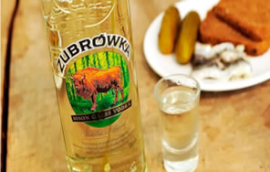

Zubrowka

The story of Zubrowka started 600 years ago, in the fourteenth century, when Casimir the Great sat on the throne of Poland. He encouraged learning and science, and his reign saw Polish alchemists master the distillation of Polish ‘wódka’ for the first time. Blessed with natural resources, Poland proved the perfect birthplace of modern vodka. Vodka rapidly grew in purity and popularity and it wasn’t long before pioneers started adding their own native wild ingredients. Polish alchemists learnt that by infusing their spirit with the essence of bison grass, they could create a unique herbal vodka. This was the start of Zubrowka and its flavour and aromas has continued to captivate Polish people and the rest of the world ever since.